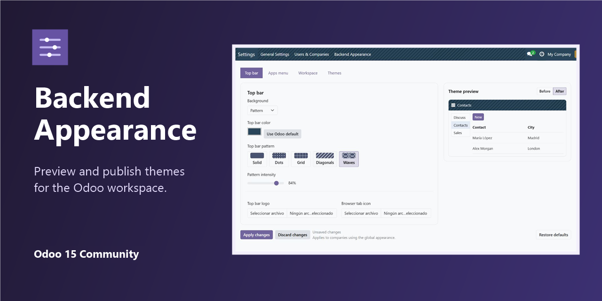
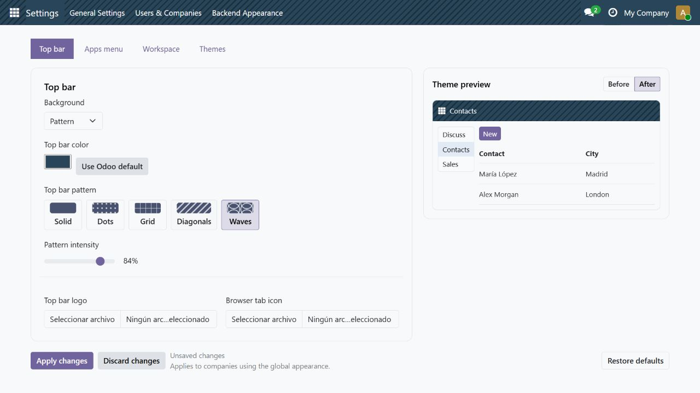
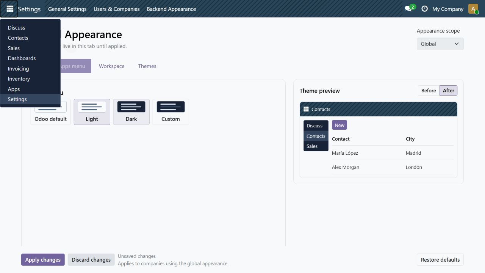
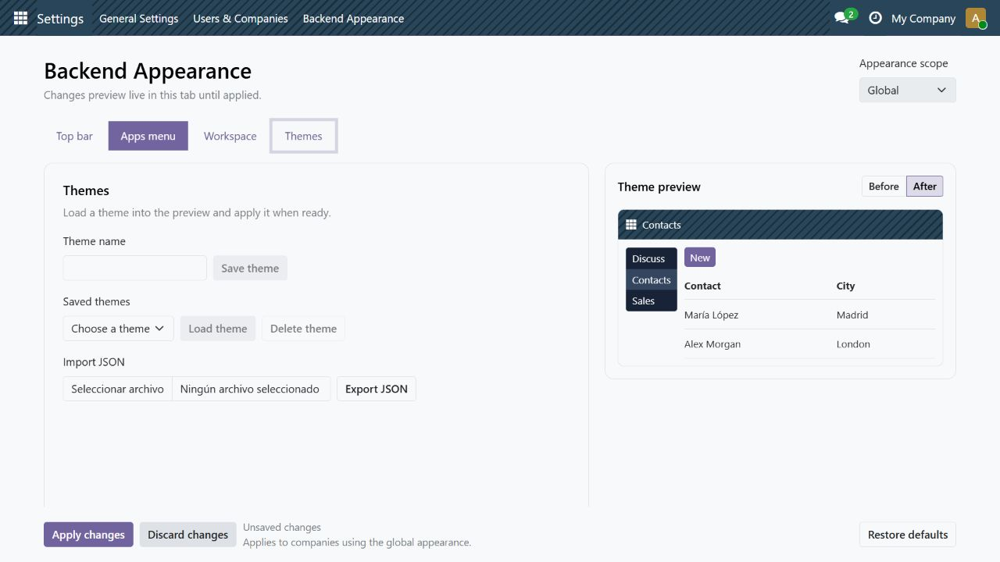

Customize the Odoo 15 Community workspace from Settings.

See how a theme changes the top bar, apps menu and list density. Switch between Before and After, then apply or discard your draft.

Choose a flat color, a built-in pattern or a photo for the top bar. Adjust its crop, add a logo and a browser icon, and set the apps menu colors and workspace density.

Save named themes and transfer them between installations as JSON. Publish a global theme or customize the appearance for the active company.
